Não se engane pensando que este é apenas mais um jogo de luta em 3D para Playstation. Em Bloody Roar, quando seu lutador atinge um certo nível de energia pode se transformar em um animal violento. Alice vira um coelho assassino, Greg um gorila gigante e Fox uma raposa. Na forma de animais, os lutadores ganham novos poderes e mais força, transformando o jogo em um verdadeiro show de sangue e violência.
| 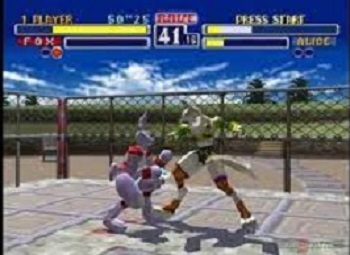 | 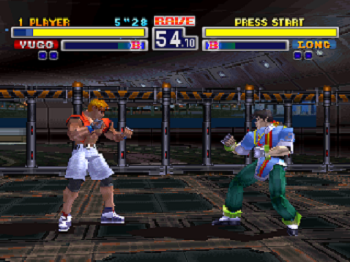 |
| 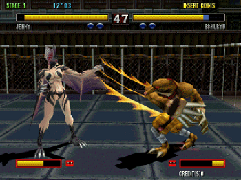 | 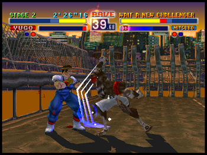 |
| 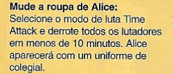 | 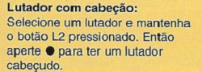 | 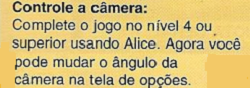 |
| 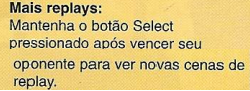 | 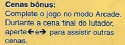 | 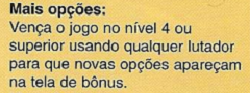 |
| 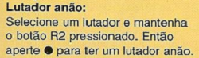 | 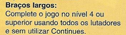 | |
| 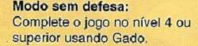 | ||
| 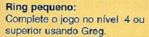 | 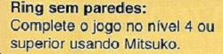 | 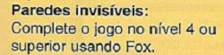 |
| 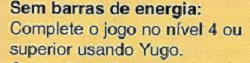 | 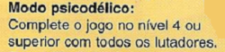 |